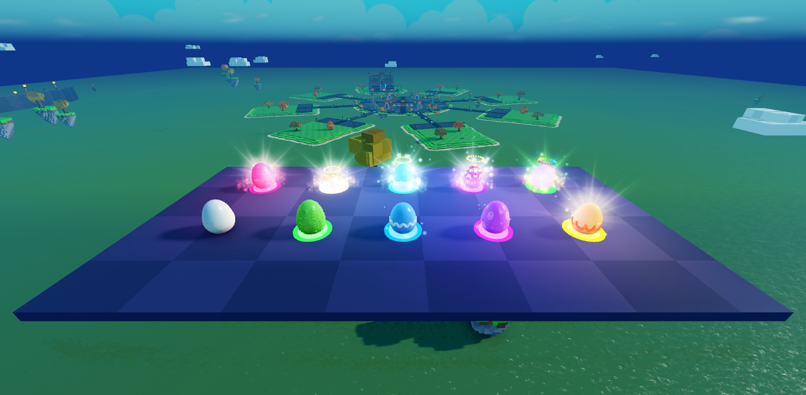
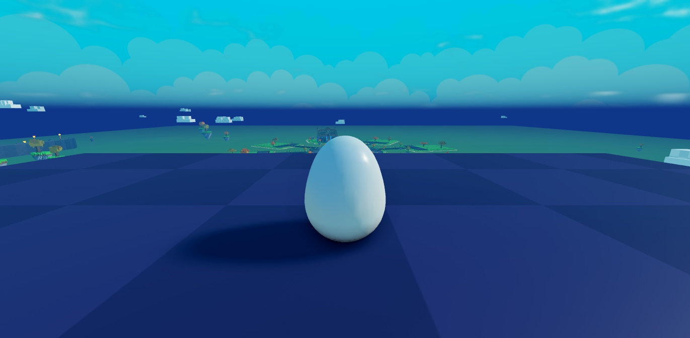
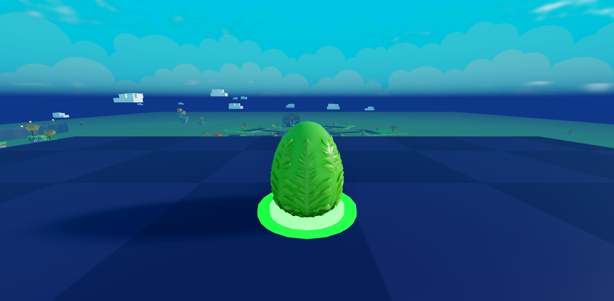
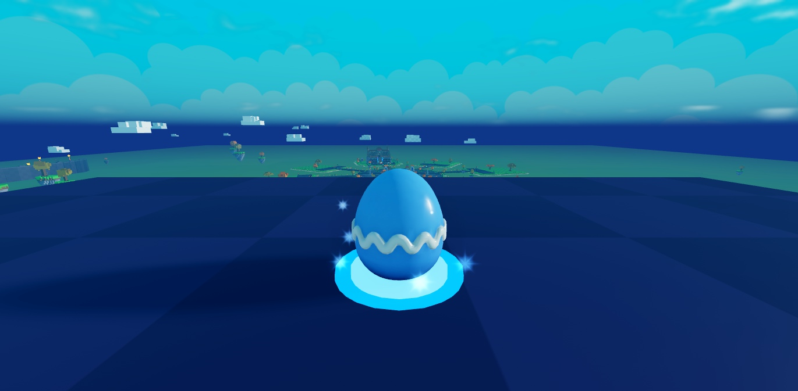
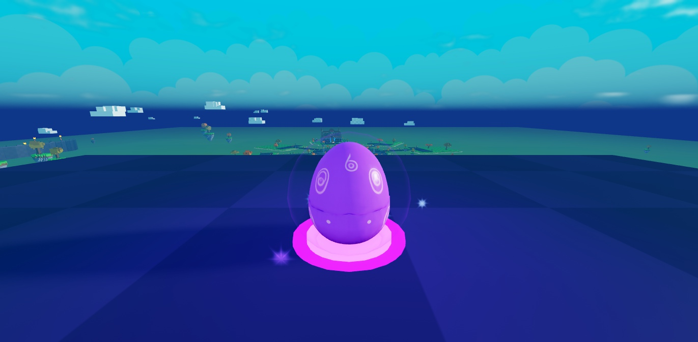
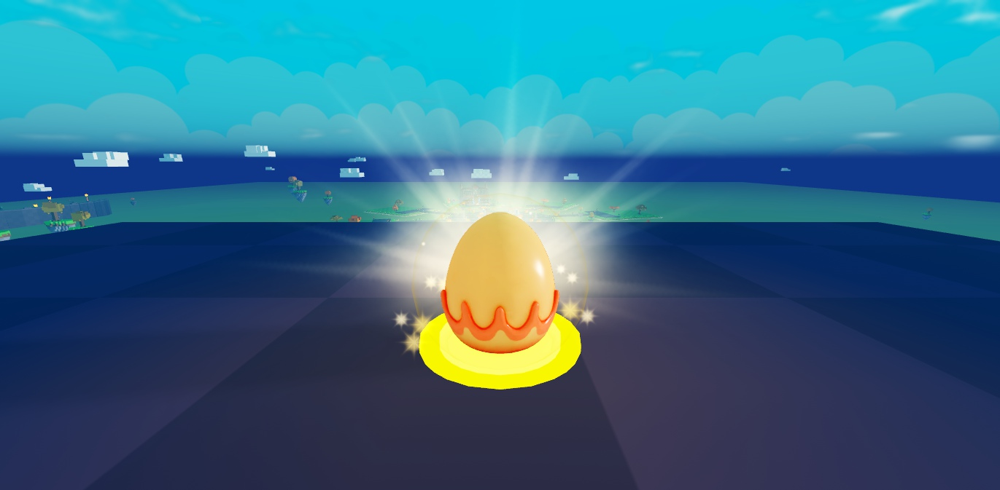
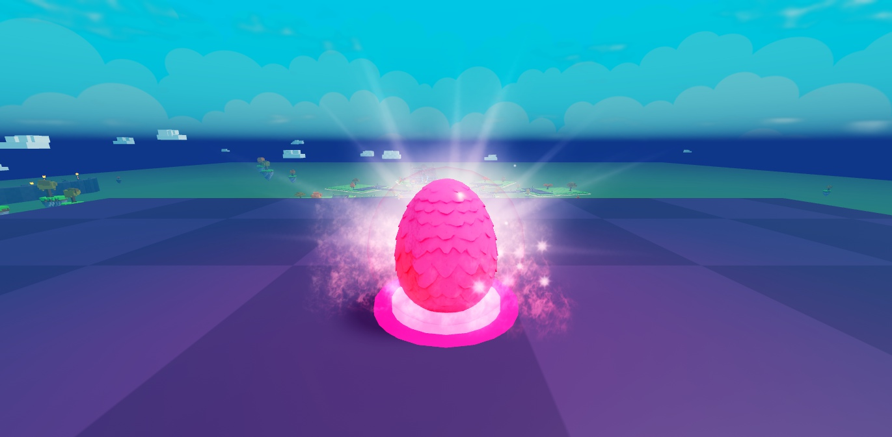
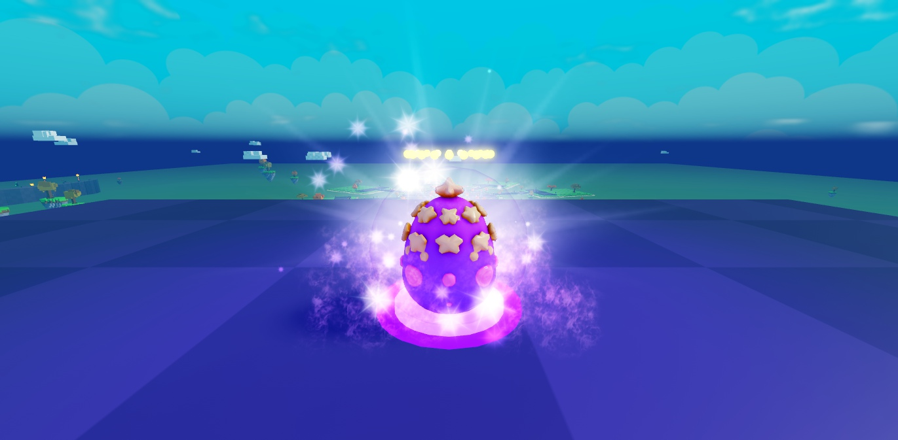
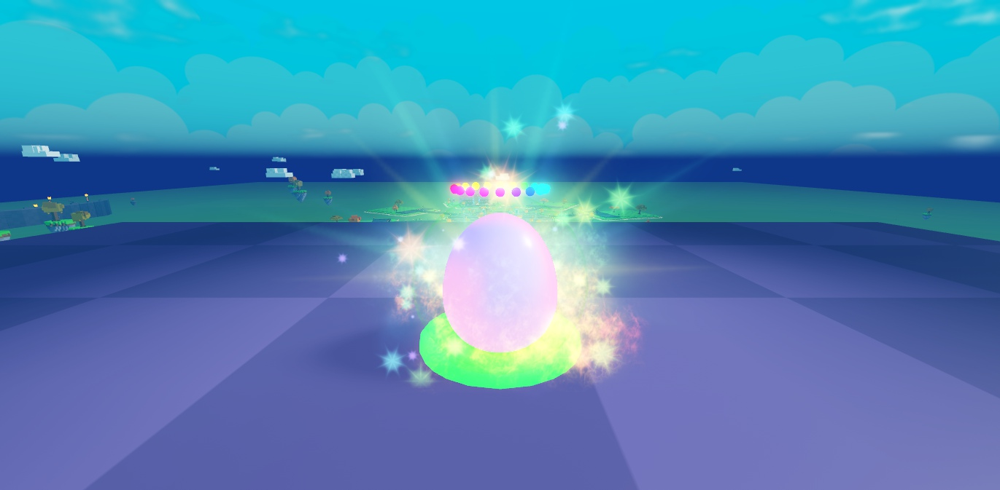

C'est une proposition à valider. Captures prises dans le jeu, en plein jour, avec les nouveaux œufs (un modèle par rareté). Chaque rareté garde l'aura de la précédente et ajoute un effet : plus l'œuf est rare, plus il brille.

Vue d'en haut, comme la caméra du jeu. Devant : Commun → Légendaire. Derrière : Mythique → Secret.
Les 10 raretés

1Commun
Œuf blanc simple, pas d'aura.

2Peu commun
Œuf à feuilles. + anneau lumineux au sol de sa couleur.

3Rare
Œuf à vague. + étincelles qui montent autour de l'œuf.

4Épique
Œuf à spirales. + bulle de lueur et lumière colorée sur le sol.

5Légendaire
Œuf doré à vagues. + rayons de lumière qui tournent lentement derrière l'œuf.

6Mythique
Œuf à écailles de dragon. + flammes roses qui l'entourent.
Œuf de glace en coquille. + étoiles qui scintillent tout autour.

9Cosmique
Œuf violet à étoiles. + fumée de galaxie violette qui tourbillonne.

10Secret
Œuf nacré. Toute l'aura en arc-en-ciel ; en jeu, l'anneau et l'auréole changeront de couleur en continu.
Où on verra les auras : sur les socles de la machine à œufs, au comptoir et sur la place.
Dans les menus (« 🥚 Œufs », boutique), l'œuf aura un fond de la couleur de sa rareté. Téléphone : peu de particules par œuf (léger), et les auras des œufs loin de la caméra sont coupées.